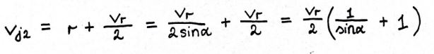

Czy jacht może płynąć z prędkością większą od prędkości wiatru?
Płynącemu na jachcie żeglarzowi często może wydawać się, że osiąga duże prędkości, ponieważ ma złudne wrażenie, że prędkość samego jachtu jest dużo większa niż w rzeczywistości.
Omówiliśmy już we wcześniejszych częściach rodzaje wiatru - rzeczywisty, pozorny i własny, dlatego wiemy skąd bierze się u wspomnianego żeglarza takie odczucie.
Jak to jednak dokładnie jest z prędkością łodzi? Czy jacht może osiągnąć większą jej wartość od wiatru? Jeśli odpowiedź miałaby być twierdząca, to jakie warunki musiałyby zostać spełnione? Jeśli jest to niemożliwe, to właściwie dlaczego i jaka wtedy jest maksymalna prędkość jachtu?
Spróbujmy to rozważyć.
Przypomnijmy sobie zależność występującą pomiędzy wiatrami:
vp = vr + vjGdzie:
vp - prędkość wiatru pozornego
vr - prędkość wiatru rzeczywistego
vj - prędkość jachtu = prędkość wiatru własnego
W naszych rozważaniach załóżmy, że stałe są wartości prędkości wiatru rzeczywistego oraz kąt α, najostrzejszy pod jakim jest w stanie płynąć jacht, aby nie wejść w kąt martwy.
vr - cięciwa okręgu opisanego na trójkącie
r - promień okręgu opisanego na trójkącie
Aby móc dokładnie przeanalizować powyższy rysunek warto zrobić krótkie przypomnienie z geometrii:
1. TWIERDZENIE O KĄCIE ŚRODKOWYM I WPISANYM W OKRĄG
Jeśli kąt wpisany α i kąt środkowy β są oparte na tym samym łuku, to:
β = 2α2. TWIERDZENIE O KĄCIE OPARTYM NA ŚREDNICY OKRĘGU
Jeśli kąt wpisany α jest oparty na średnicy okręgu, to:
α = 90Odnieśmy to teraz do naszego jachtu z pierwszego rysunku.
Na początku powstał nam trójkąt z wektorów vj, vp i vr
Aby dojść do wzoru na promień okręgu, musimy skorzystać z obu przypomnianych twierdzeń:
Stąd możemy zauważyć zależność, że długość promienia okręgu rośnie odwrotnie proporcjonalnie do wartości kąta α.
Na podstawie pierwszego rysunku możemy zauważyć, że odcinek OA1 stanowi maksymalną składową prędkości jachtu vj1. Spróbujmy zatem wyznaczyć wzór potrzebny do jej policzenia.
Z rysunku możemy wyznaczyć:
skoro wyznaczyliśmy wcześniej ile równa się promień, to możemy podstawić jego wartość do powyższego równania i otrzymamy:
A teraz z rysunku wyciągniemy kolejną informację. Skoro odcinek OA2 stanowi maksymalną składową prędkości vj2, który płynie z wiatrem, możemy zapisać:
I na sam koniec naszych rozważań spójrzmy na odcinek OA3, który jest maksymalną prędkością jachtu i odpowiada długości średnicy. W tym przypadku wyjdzie nam równanie:
Dotarliśmy do momentu, w którym potwierdzamy, że jacht może płynąć z prędkością większą od prędkości wiatru. Jednak biorąc pod uwagę duże opory ruchu, jacht płynący po wodzie nie da rady tego zrobić. W takiej sytuacji możemy wysunąć przykład bojerów, które to mogą płynąć nawet pod kątem kilku stopni na wiatr.